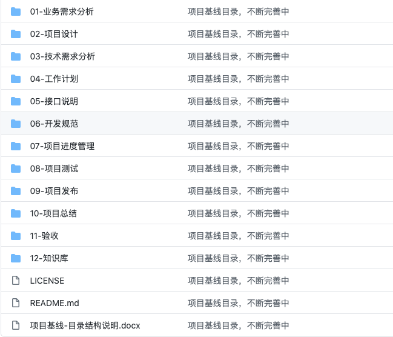

基线 (Baseline) 说起 . 基线是软件文档或源码 ( 或其它产出物 ) 的一个稳定版本 , 它是进一步开发的基础 . 所以 , 当基线形成后 , 项目负责 SCM 的人需要通知相关人员基线已经形成 , 并且哪儿可以找到这基线了的版本 . 这个过程可被认为内部的发布 . 至于对外的正式发布 , 更是应当从基线了的版本中发布 .
基线是项目储存库中每个工件版本在特定时期的一个 “ 快照 ” 。它提供一个正式标准，随后的工作基于此标准，并且只有经过授权后才能变更这个标准。建立一个初始基线后，以后每次对其进行的变更都将记录为一个差值，直到建成下一个基线。
参与项目的开发人员将基线所代表的各版本的目录和文件填入他们的工作区。随着工作的进展，基线将合并自从上次建立基线以来开发人员已经交付的工作。变更一旦并入基线，开发人员就采用新的基线，以与项目中的变更保持同步。调整基线将把集成工作区中的文件并入开发工作区。
建立基线的三大原因是：重现性、可追踪性和报告。
重现性是指及时返回并重新生成软件系统给定发布版的能力，或者是在项目中的早些时候重新生成开发环境的能力。可追踪性建立项目工件之间的前后继承关系。其目的在于确保设计满足要求、代码实施设计以及用正确代码编译可执行文件。报告来源于一个基线内容同另一个基线内容的比较。基线比较有助于调试并生成发布说明。
建立基线后，需要标注所有组成构件和基线，以便能够对其进行识别和重新建立。
建立基线有以下几个优点：
- 基线为开发工件提供了一个定点和快照。
- 新项目可以从基线提供的定点之中建立。作为一个单独分支，新项目将与随后对原始项目（在主要分支上）所进行的变更进行隔离。
- 各开发人员可以将建有基线的构件作为他在隔离的私有工作区中进行更新的基础。
- 当认为更新不稳定或不可信时，基线为团队提供一种取消变更的方法。
- 您可以利用基线重新建立基于某个特定发布版本的配置，这样也可以重现已报告的错误。
使用
定期建立基线以确保各开发人员的工作保持同步。但是，在项目过程中，应该在每次迭代结束点（次要里程碑），以及与生命周期各阶段结束点相关联的主要里程碑处定期建立基线：
生命周期目标里程碑（先启阶段）
生命周期构架里程碑（精化阶段）
初始操作性能里程碑（构建阶段）
产品发布里程碑（产品化阶段）
基线目录结构

克隆地址 https://github.com/shanyutou/Project-Baseline-Catalogue.git
项目中同时不断积累各种文档模板与画图方法，目的在于提高程序员的文档能力。